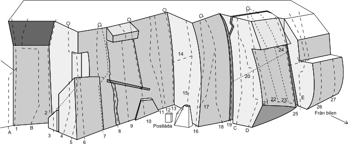
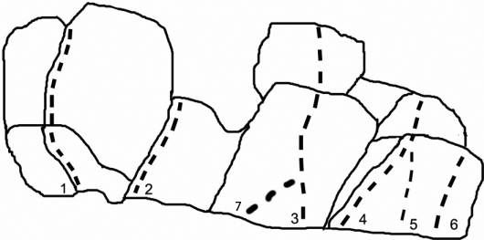
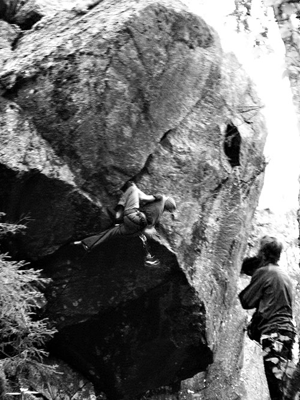

Välaberget
Lat: 63.293711
Long: 13.216209
Allmänt
Välkommen till Åredalens finaste klätterklippa.
Välaberget
är en klätterklippa på fjället Vällistes skogsbeklädda nordöstsluttning. Huvuddelen av klippan är öst-sydöstvänd och här bedrivs klättring med en skön utsikt över böljande fjäll och vidder.
Beskrivning
Klättringen på denna lilla klippa är av utmärkt kvalité och kännetecknas främst av småstegsklättring på mycket god friktion. Klippan genomkorsas även av en hel del spricksystem, både stora och små. Klippan är ungefär femton meter hög i snitt och ungefär hundra meter bred. Det finns i runda slängar ett trettiotal leder i varierande svårighetsgrad.
Det har klättrats länge på denna klippa och troligen är
Gillis Billing
och
Göran Stenberg
några av de första att klättra lite mer seriöst här under -60 och -70-talet (tidigaste kända klättring av Välaberget skedde redan under trettiotalet). Under -80 och -90 talet har
Håkan Eliasson
och
Jonas Persson, MatsHåkan Lundhag
varit flitiga besökare av klippan. Leden "Joshua" aka "Sprickan i Skogen", är kanske den mest omtalade och består av en ensam, bred spricka som klyver en mycket brant vägg och ett "tak". Den klättrades första gången av
Josef Nyström
och/eller
Mats Olofsson
, och är graderad till 8-/8. Annan kuriosa att känna till är att 95% av alla frileder på Välaberget har klättrats Frisolo.
Ett antal leder är borrbultade men kräver även att man säkrar med egen Tradutrustning där det tillåter. Leder som Främlingslegionen, Skoterleden och Röd Oktober är typiska exempel på detta.
Att Aidklättring är en betydande del av Välaberget märks tydligt då det finns ungefär 10 leder som klättrats i denna stil. De flesta etablerade under -90-talet. Den så kallade "Stora Stenen" är ett stort stenblock nedanför huvudväggen, där det är tillåtet att bedriva träning (dvs med topprep om man vill) för aidklättring på tre etablerade aidleder.
Det finns även en samling aidleder på huvudväggen (från C2 till A4+) dessa klättras UTAN topprep, endast på LEAD för att förhindra onödigt slitage, var vänlig Respektera detta! Samtliga aidleder är klättraren
Pierre Olsson
s verk.
Det finns också stor möjlighet till fin bouldering då många stora block med ett flertal etablerade problem finns nedanför huvudväggen.
Vid foten av Välaberget finns en gästbok, skriv gärna, boken fungerar som ett forum för de klättrare som är aktiva i området. Här kan man läsa om det senaste som gäller för just Välaberget.
Lokal klubb är
.
Vägbeskrivning
<div style="float:right; border: solid 1px grey">
<googlemap lat="63.317925" lon="13.30307" type="map" zoom="11" width="375" height="225" overview="yes" controls="small">
63.293711, 13.216209, Välaberget i Undersåker, Åre
</googlemap>
</div>
Sväng av från E14 i Undersåker mot Vålådalen. Passera indalsälven
och Henån. I slutet av den branta uppförsbacken efter Henån finns en p-plats på höger sida, här står numera också en mobilmast. Följ kryssleden över kalhygget mot Väliste. Tag en stig åt höger efter ungefär 1 km. Följ den numera vältrampade stigen till berget. Det tar ca 15min att gå från parkeringen till klippan.
Leder

- 1
- Meganöten
- 5
- Följ diedret upp till hyllan, sedan höger och avslutas något överhängande. Fel utritad på skissen, leden som är utritad är i princip sträckningen för Captain Hook. Meganöten går ett par meter till vänster i det uppenbara diedret.
-
- Titel tåtel
- 6
- Ute på areten. 7 bultar. Topankare.
-
- Grekisk sallad
- 8
- Går mitt på väggen mellan två aidlinjer. Startar vid en svag areteformation som sträcker sig ca 3 bultar upp. Därefter rakt upp på vassa crimpar mot ankaret under taket. Regnsäker. 4 bultar. Firningsankare.
- 2
- Puhs hörna
- 7
- Överhängade diedret rakt upp. Tung och tämligen teknisk led, något runout 2/3 upp. Går att leda med kamkilar och wirekilar, vilket har gjorts många gånger. Rensning och första kända klättring av P Olsson, 1993
-
- Mockapär
- 8-
- Väggen mellan puhs hörna och vit november. 5 bultar. Firningsankare.
- 3
- Vit november
- 7
- En av de finaste bultade lederna på berget. Tidigare en aidlinje
- 4
- Bulten
- 6-
- Kort, brant och välsopad. Endast toppsäkrad led.
-
- Ända in i Kaklet
- 6
- Gemensam start med Silhuettleden, men drar sig istället ut på vänstra väggen. Firningsankare.
- 5
- Siluettleden
- 6-
- Börja ute på hörnet, klättra några layback moves upp till ett något löst block. Klättra över på högra väggen och följ den lilla sprickan rakt upp, sen vidare upp via Billingslingan till toppen.
- 6
- Förbjuden kant
- 6
- Småstegsklättring rakt upp utan att använda kanten. 4bb och ett ankare med kedja. Vill man använda kanten så gör man givetvis det, graden är då 6- och leden är mycket fin på detta vis också!
- 7
- Björnen
- 5+
- Layback via flaksprickan. Vid hyllan tar man de högra sprickorna upp till toppen. Firningsankare finns.
- 8
- Billingslingan
- 4
- Bra nybörjarled. Följ de parallella sprickorna, ställ dig på listen mitt på väggen och gå till vänster. Vidare rakt upp på hörnet. Toppankare.
- 9
- Främlingslegionen
- 7-
- Säkra i tvärsprickan med 4cm kamkil. Sedan rakt upp på små grepp via 4 bb mot det stora taket vid toppen. Taket klättras med dragning åt höger via ett incutgrepp för högerhanden i taket. Bultat ankare.
- 10
- Teknisk linje
- 6-
- Klättra rakt upp med utsteg till höger eller vänster om taket. Går också dela upp leden med en på var sida om det svagt utstickande hörnet mitt på leden, grad 6.
- 11
- Eliassons svarta fläck
- 6
- Insteg i sprickan, lägg en kamsäkring i tvärsprickan om du känner dig osäker. Följ diederet rakt upp via tre bultar, gå lite höger och sedan uppför svaplattan via en borrbult till toppen. Toppankare.
- 12
- Hylands hörna
- 6-
- Klättra helt ute på hörnet hela vägen upp. Endast topprep. Teknisk led.
- 13
- Korphörnet
- 4+
- Går helt inne i hörnet. Bra nybörjarled, dock något grusig och svårare än man kanske tror.
- 14
- Korpleden
- 5
- Insteg några meter till höger om Korphörnet. Klättra i sprickan och upp till stor hylla åt höger, gå ut runt hörnet och rakt upp. Sista halvan klättrar man via de sista bultarna på Ren o Fin. Vill man toppa görs det lämpligen i borrbultsankaret till Ledknäckarn.
- 15
- Ledknäckarn
- 7
- Börja leden nedanför det stora blocket, håll i blockets högra kant och klättra upp tills du står på själva spetsen. Placera en stor wirekil så högt du kan, jamma foten i sprickan och gå på rakt upp. Högerhanden greppar ute på areten till höger, säkra i den smala sprickan (gul alien/gul C3) sen med dragning åt vänster upp till stor hylla med en fixpitong, greppa höger-areten med högerhanden, kör rakt upp förbi borrbult till ankare, håll dej till vänster om areten hela tiden - gå inte ut till leden Ren o Fin, Ledknäckaren är en helt oberoende linje. Leden är nu upprustad med ny bb istället för den gamla, och en ny pitong. Toppankare. P Olsson 1992.
- 16
- Ren o Fin
- 6
- Börja på hörnet och runda det åt höger. Klättra rakt upp med krux på ledens brantaste parti. Lättare sedan.Toppankare.
- 17
- Stenbergs led
- 5+
- Samma insteg som led 16. Sedan går leden i princip mellan Ren o Fin och Skoterleden. En kombinationsled av 16 & 18 skulle man kunna säga.
- 18
- Skoterleden
- 6-
- Första halva leden är borrbultad sedan Tradsäkrad med mycket fina lägen. Lite knepigt insteg snett åt vänster sedan rakt upp. Toppankare.
- 19
- Kaminen
- 5+
- Följ kaminen, klättra utanför på pelaren eller I kaminen. Går också att laybacka hela sprickan, fin Yosemite träning!
- 20
- Klastrofobi
- 5-
- Samma insteg som kaminen men fortsätt in i kaminens mörker. Säkra i taket. Snart återkommer ljuset på andra sidan berget. Klättra över taket och laybackklättra utsteget. Varning för repdrag. Inget för den som lider av cellskräck! OBS, soloklättras oftast.
- 21
- Okänd
- 6-
- Numera helbultad med samma insteg som Röd Oktober.
- 22
- Röd oktober
- 6+
- Insteget är precis till höger om den överhängande väggen, i det lilla hörnet. Klättra upp i hörnet (aningen överhängande) säkra med en medium kamsäkring, mantla upp och följ den tunna sprickan omedelbart till vänster om näsan och sedan rakt över taket. Taket säkras med liten kam/kil. Två borrbultar som toppankare.
- 23
- Atomvinter
- 7+
- Rakt upp på små lister till taket, låt bli stora sprickan till höger. Taket är cruxet, finns flera varianter. Borrbultad led.
- 24
- Atomvinter, variant
- 5
- Vill du inte göra originalutsteget, klättra ut åt höger och laybacka uppför den stora sprickan, fint. Topankare
- 25
- Ökänd
- 4+
- Starta i hörnet, följ den vassa stenkanten. Avslutas med att antingen traversera vänster under taket ända bort till Röd Oktober eller rakt upp i den stora sprickan (camalot 6) eller bara snett ut till höger på goda grepp.
- 26
- Johans lösa
- 5+
- Klättra uppför det uppspruckna överhängande partiet.
- 27
- Mickes regndans
- 5-
- Klättra över taket och följ sprickan upp.
Aidleder
Obs!
Klättra inte nedanstående leder med topprep, utan endast på lead för att minimera onödigt slitage. Var vänlig respektera detta. (Anm. Det finns ytterligare ett antal aidleder på Välaberget som dock inte är utritade i denna förare.)
- A
- Halvan
- A1
- Okänd förstabestigare och troligen friklättrad. Diedret rakt upp. Några Skyhoks och rurps. Leden är felritad på skissen, Halvan går bakom det stora döda trädet 8 meter till vänster om Captain Hook.
- B
- Nostradamus
- A2
- Leden följer den mycket tunna sprickan till vänster om leden Puhs hörna. Säkra inte i hörnet! Det är en friled! Efter den tunna sprickan gå direkt ut på travers till vänster under överhänget, något "rutten" klippa. Leden har två 8mm-Petzlbultar utan hängare, ta med egna. Exakt ledbeskrivning finns i brevlådan vid Välaberget. Fler än 20 bestigningar.
- C
- Svart september
- A2+/C3
- Rakt upp mot två 6mm-bultar utan hängare. Sedan via beaks och hooks mot två andra 6mm-bultar, även de utan hängare. Spricka mot toppen, samma utsteg som "Triss". Exakt ledbeskrivning finns i brevlådan vid Välaberget. Fler än 15 bestigningar.
- D
- Triss
- A3/C3+
- Start vid den hemgjorda borrbulten ute vid den tydliga areten. Rakt upp i den tunna sprickan, sedan över till vänster och upp i nästa tunna spricka. Skyhook travers till vänster och slutligen upp i nästa diagonala spricka (samma spricka som Svart September). Leden har två 8mm-Petzlbultar utan hängare. Ta med egena. Exakt ledbeskrivning finns i brevlådan vid Välaberget. Fler än 30 bestigningar. Historia: Förstabestigningen gjordes med en borrad BAT-Hook i starten, sedan helt naturlig, A4+ var graden då, nu borrad för att undvika markfall på en otroligt fin led som annars knappast skulle repeteras
- E
- Copernicus
- A4
- Leden går uppför den svagt överhängade väggen till höger om frileden Ökänd. Insteg från svaplattan. Följ tunn spricka rakt upp i 2m fortsätt i den andra sprickan och avsluta med en Skyhook, fritt till toppen. Exakt ledbeskrivning finns i brevlådan vid Väla. Färre än 5 bestigningar.
- F
- Captain Hook
- A4
- Leden ej utritad på föraren, men startar 2m till vänster om Nostradamus. Många hooklägen samt Beaks och ett par Copperheads. Fler än 5 bestigningar.
- G
- A5
- A4+
- Leden ej utritad på föraren, men startar 2m till höger om Copernicus. Fix pin i starten, i det lilla taket. Dragning åt höger sen rakt upp på Beaks och Rurps och Hooks. En led med kassa säkringar och stor skaderisk. Endast 1 bestigning.
- H
- Variant
- A4+
- Leden ej utritad på föraren. Samma start som Svart September. Efter andra 6mm-bulten, gå rakt upp till hooktraversen på Triss. Överhängande och många copperheads. 2 bestigningar.
Nedre väggen

- 1
- Joshua
- 8-/8
- Den mycket branta breda sprickan som klyver väggen till vänster. Mest hand- och knytnävsjam. Tag förutom standardstorlekar med två camalot #4, eller en camalot #5 och en camalot #4 för denna led.
- 2
- Blå ål
- 7-
- Klättra den snea stora spickan. Tag med en camalot #5 eller en crashpadd.
- 3
- Lille Skutt
- 6-
- Hoppstart, gå sen rakt mot taket. 2 kamsäkringar i tvärsprickorna under taket. 2bb till ankare.
- B
- Lillefjant
- 7B
- Boulder, sittstart på Lille Skutt. Startgrepp har gått sönder lite. Ståstart på problemet heter tåskutt 6B+
- 5
- Donkey Kong
- 6B+
- Boulderled, etableringstart på små crimps
- 6
- Alexis
- 6C
- Boulderled, etableringstart på sloopers. Sedan ett ryck upp till kanten. lite trixig
- 7
- Sekundära Diftonger
- 7A
- Boulderled, Sitstart sedan upp längs med aretén till starten på Lille Skutt.

Josef Nyström på Joshua 8-/8,
2006
Foto: Alexander Rydén
Stora Stenen
Finns flera Aidleder på stora stenen
-
- Traversen i skogen
- 6B+
- Boulder, Fin hangel travers på stenen brevid stora stenen.
-
- ?
- 6A+
- Boulder, travers längs med den diagonala sprickan på stora stenen.
-
- Elefanthopp
- 7A+
- Boulder, Ståstart
-
- Överkörd av en pansarvagn
- 7B+
- Väldigt fina rörelser! Sittstart på elefanthopp
Överhänget vid stigen
-
- Janssons Frestelse
- 8/8+
- Powerklättring och dyno.
-
- Räkyoga
- 8-
- Explosiv och dynamisk powerklättring.
-
- Christian
- 6C
- Boulder, Startar på baksidan stora stenen. Sittstart, mycket fin
Lilla boulderväggen
-
- Conny Kanonkula
- 6A
- Boulder, dyno från stora underclings
-
- Streeba
- 6A+
- Boulder, travers längs hela blocket
Boulders utan sektor
-
- Ass Crack Rocket Attack
- 6C+
- Boulder
Extern förare
Kategori:Trad
Kategori:Aid
Kategori:Sport
Kategori:Jämtland
Kategori:Jämtland
Copyright (C) Permission is granted to copy, distribute and/or modify this document under the terms of the GNU Free Documentation License, Version 1.3